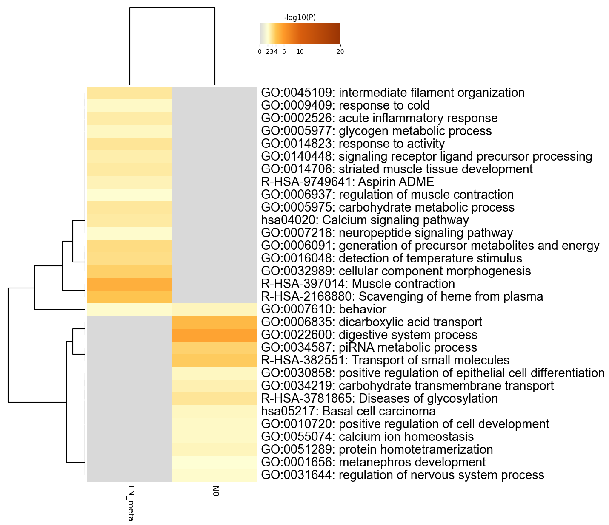
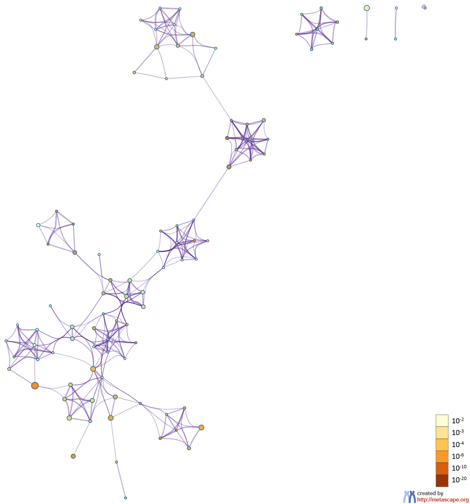

Metascape Gene List Analysis Report
metascape.org1Heatmap Summary
Figure 1. Heatmap of enriched terms across input gene lists, colored by p-values.

|
|
|
| Metascape only visualizes the top 20 clusters. Up to 100 enriched clusters can be viewed here.  |
{kind=link}
Gene Lists
User-provided gene identifiers are first converted into their corresponding H. sapiens Entrez gene IDs using the latest version of the database (last updated on 2021-05-01). If multiple identifiers correspond to the same Entrez gene ID, they will be considered as a single Entrez gene ID in downstream analyses. Each gene list is assigned a unique color, which is used throughout the analysis. The gene lists are summarized in Table 1.Table 1. Statistics of input gene lists.
| Name | Total | Unique | Color Code |
|---|---|---|---|
| LN_meta | 2842 | 2828 | |
| N0 | 1435 | 1419 |
Figure 2. Overlap between gene lists: (a) only at the gene level, where purple curves link identical genes; (b) including the shared term level, where blue curves link genes that belong to the same enriched ontology term. The inner circle represents gene lists, where hits are arranged along the arc. Genes that hit multiple lists are colored in dark orange, and genes unique to a list are shown in light orange. The publication-quality version of the figures is included in the Zip package as a .svg file under the Overlap_circos folder (readable by popular web browsers and Adobe Illustrator).

|
|
|
|
|
Pathway and Process Enrichment Analysis
For each given gene list, pathway and process enrichment analysis has been carried out with the following ontology sources: KEGG Functional Sets, KEGG Pathway and Reactome Gene Sets. All genes in the genome have been used as the enrichment background. Terms with a p-value < 0.01, a minimum count of 3, and an enrichment factor > 1.5 (the enrichment factor is the ratio between the observed counts and the counts expected by chance) are collected and grouped into clusters based on their membership similarities. More specifically, p-values are calculated based on the accumulative hypergeometric distribution4, and q-values are calculated using the Banjamini-Hochberg procedure to account for multiple testings5. Kappa scores6 are used as the similarity metric when performing hierachical clustering on the enriched terms, and sub-trees with a similarity of > 0.3 are considered a cluster. The most statistically significant term within a cluster is chosen to represent the cluster. When multiple gene lists are provided, all lists are merged into one list called "_FINAL". A term may be found enriched in several individual gene lists and/or in the _FINAL gene list, and the best p-value among them is chosen as the final p-value. The pathway/process clusters that are found to be of interest (either shared or unique based on specific list enrichment) are used to prioritize the genes that fall into those clusters (membership is presented as 1/0 binary columns in the Excel spreadsheet). Note that individual gene lists containing more than 3000 genes are ignored during the enrichment analysis to avoid superficial terms; this is because long gene lists are often not random and generally trigger too many terms that are not of direct relevance to the biology under study.Table 2. Top 20 clusters with their representative enriched terms (one per cluster). "Count" is the number of genes in the user-provided lists with membership in the given ontology term. "%" is the percentage of all of the user-provided genes that are found in the given ontology term (only input genes with at least one ontology term annotation are included in the calculation). "Log10(P)" is the p-value in log base 10. "Log10(q)" is the multi-test adjusted p-value in log base 10. __PATTERN__ shows the color code used for the gene lists where the term is found statistically significant, i.e., multiple colors indicate a pathway/process that is shared across multiple lists.
| _PATTERN_ | GO | Category | Description | Count | % | Log10(P) | Log10(q) |
|---|---|---|---|---|---|---|---|
| R-HSA-1280218 | Reactome Gene Sets | Adaptive Immune System | 133 | 10.47 | -41.45 | -39.19 | |
| hsa04530 | KEGG Pathway | Tight junction | 49 | 3.86 | -25.46 | -23.81 | |
| R-HSA-9675108 | Reactome Gene Sets | Nervous system development | 165 | 12.99 | -85.37 | -81.85 | |
| R-HSA-1280215 | Reactome Gene Sets | Cytokine Signaling in Immune system | 164 | 12.91 | -69.20 | -66.16 | |
| R-HSA-382551 | Reactome Gene Sets | Transport of small molecules | 112 | 8.82 | -29.72 | -27.90 | |
| R-HSA-1474244 | Reactome Gene Sets | Extracellular matrix organization | 82 | 6.46 | -40.27 | -38.06 | |
| hsa04660 | KEGG Pathway | T cell receptor signaling pathway | 39 | 3.07 | -25.36 | -23.73 | |
| hsa04640 | KEGG Pathway | Hematopoietic cell lineage | 36 | 2.83 | -23.11 | -21.60 | |
| hsa05418 | KEGG Pathway | Fluid shear stress and atherosclerosis | 51 | 4.02 | -30.66 | -28.81 | |
| hsa04650 | KEGG Pathway | Natural killer cell mediated cytotoxicity | 38 | 2.99 | -19.73 | -18.37 | |
| R-HSA-109582 | Reactome Gene Sets | Hemostasis | 114 | 8.98 | -37.66 | -35.60 | |
| R-HSA-397014 | Reactome Gene Sets | Muscle contraction | 60 | 4.72 | -32.54 | -30.63 | |
| hsa04060 | KEGG Pathway | Cytokine-cytokine receptor interaction | 75 | 5.91 | -37.49 | -35.46 | |
| hsa05200 | KEGG Pathway | Pathways in cancer | 105 | 8.27 | -50.47 | -47.65 | |
| R-HSA-390522 | Reactome Gene Sets | Striated Muscle Contraction | 21 | 1.65 | -18.87 | -17.52 | |
| ko04658 | KEGG Pathway | Th1 and Th2 cell differentiation | 38 | 2.99 | -26.38 | -24.67 | |
| hsa04810 | KEGG Pathway | Regulation of actin cytoskeleton | 64 | 5.04 | -34.42 | -32.47 | |
| R-HSA-8957275 | Reactome Gene Sets | Post-translational protein phosphorylation | 21 | 1.65 | -7.87 | -7.01 | |
| hsa04514 | KEGG Pathway | Cell adhesion molecules (CAMs) | 46 | 3.62 | -26.08 | -24.38 | |
| hsa04145 | KEGG Pathway | Phagosome | 49 | 3.86 | -25.71 | -24.05 |
Figure 3. Network of enriched terms: (a) colored by cluster ID, where nodes that share the same cluster ID are typically close to each other; (b) colored by p-value, where terms containing more genes tend to have a more significant p-value.
|  | |
|
|
|
Figure 4. Network of enriched terms represented as pie charts, where pies are color-coded based on the identities of the gene lists.

|
|
|
Protein-protein Interaction Enrichment Analysis
For each given gene list, protein-protein interaction enrichment analysis has been carried out with the following databases: STRING8, BioGrid9, OmniPath10, InWeb_IM11.Only physical interactions in STRING (physical score > 0.132) and BioGrid are used (details). The resultant network contains the subset of proteins that form physical interactions with at least one other member in the list. If the network contains between 100 and 1000 proteins, the Molecular Complex Detection (MCODE) algorithm12 has been applied to identify densely connected network components.Reference
- Zhou et al., Metascape provides a biologist-oriented resource for the analysis of systems-level datasets. Nature Communications (2019) 10(1):1523.
- Saldanha AJ. Java Treeview - extensible visualization of microarray data. Bioinformatics (2004) 20:3246-3248
- Krzywinski M. et al. Circos: an Information Aesthetic for Comparative Genomics. Genome Res (2009) 19:1639-1645
- Zar, J.H. Biostatistical Analysis 1999 4th edn., NJ Prentice Hall, pp. 523
- Hochberg Y., Benjamini Y. More powerful procedures for multiple significance testing. Statistics in Medicine (1990) 9:811-818.
- Cohen, J. A coefficient of agreement for nominal scales. Educ. Psychol. Meas. (1960) 20:27-46.
- Shannon P. et al., Cytoscape: a software environment for integrated models of biomolecular interaction networks. Genome Res (2003) 11:2498-2504.
- Szklarczyk D. et al. STRING v11: protein-protein association networks with increased coverage, supporting functional discovery in genome-wide experimental datasets. Nucleic Acids Res. (2019) 47:D607-613.
- Stark C. et al. BioGRID: a general repository for interaction datasets. Nucleic Acids Res. (2006) 34:D535-539.
- Turei D. et al. A scored human protein-protein interaction network to catalyze genomic interpretation. Nat. Methods. (2016) 13:966-967.
- Li T. et al. A scored human protein-protein interaction network to catalyze genomic interpretation. Nat. Methods. (2017) 14:61-64.
- Bader, G.D. et al. An automated method for finding molecular complexes in large protein interaction networks. BMC bioinformatics (2003) 4:2.